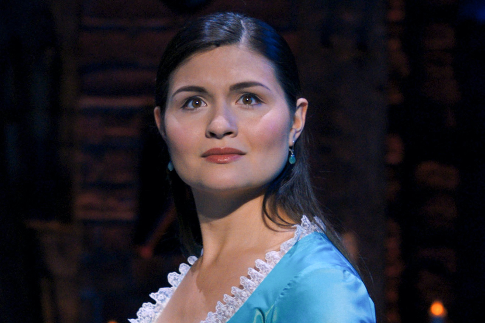

Winter's Ball • 1990s R&B Pop Groove
0:00
Featured Duo
Love at the Ball
Lin-Manuel Miranda (2015)

Eliza Schuyler
Phillipa Soo
Alexander Hamilton
Lin-Manuel Miranda
90s Girl-Group Harmonies
Listen to the backup harmonies and vocal riffs styled like 1990s R&B girl groups (like TLC or Destiny's Child).
The Revolving Turntable
Watch how the double rotating circle on the stage floor spins the dancers to simulate time spinning by.
The Contrast: Singing vs. Rap
Notice how Eliza sings sweeping, melodic pop notes while Hamilton introduces himself through rhythmic rap poetry.